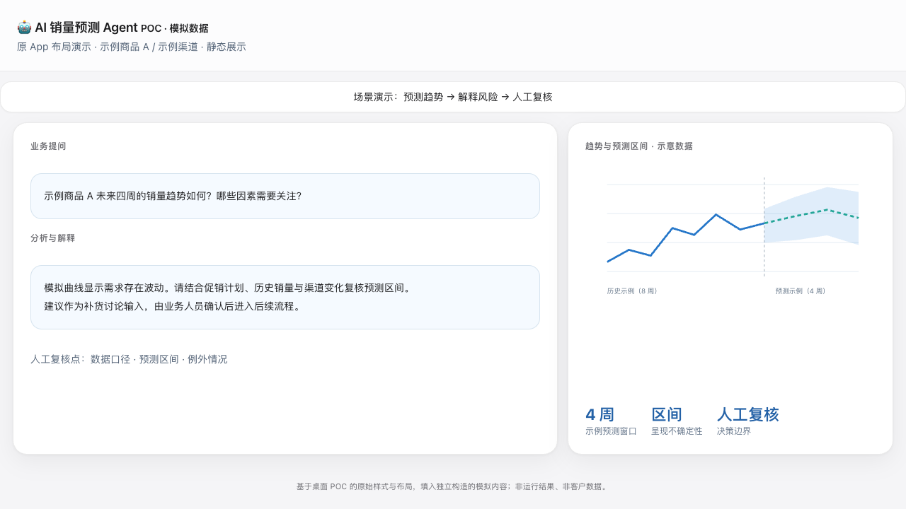
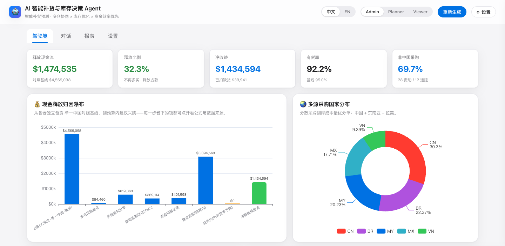

预测区间
以预测范围和前提条件呈现不确定性，避免把单点预测误读为确定承诺。
ANONYMISED CASE / PRODUCT DESIGN
跨境电商 · 供应链与预测
将销售预测、补货判断和业务解释拆分为可审阅的步骤，帮助团队从“看一个预测数字”转向“理解建议为什么成立”。
01 / BUSINESS CHALLENGE
业务团队面对销量波动、促销、价格、广告和季节性时，往往能得到预测结果，却难以判断预测依据、风险区间与补货动作之间的关系。
因此，产品的重点不是让模型替代采购决策，而是将预测、业务规则、异常校验和建议解释组合成可由业务人员复核的协同流程。
02 / WORKFLOW DESIGN
03 / PRODUCT APPROACH
以预测范围和前提条件呈现不确定性，避免把单点预测误读为确定承诺。
将趋势、季节性、促销、价格和广告等因素放入可解释的业务语境。
以建议、风险提示和人工复核为主，不把自动下单设为默认能力。
04 / MY ROLE
05 / BOUNDARY & EVIDENCE
本案例以匿名化产品与工作流设计说明能力范围，不披露客户、订单、库存、模型参数或实际补货结果。接入真实业务前，需要根据组织权限、库存策略、供应商约束和业务验收标准完成受控验证。
POC / PRODUCT PREVIEW
基于桌面销量预测 App 的原始样式与分栏布局制作的演示页面截图，文字与曲线使用独立模拟内容。用于说明产品交互思路，不是 App 实际运行输出或真实经营预测。

POC / ISOLATED RUNTIME
原补货 Agent 页面在隔离环境中运行，使用固定种子生成的合成 SKU、库存与采购数据，外部系统集成全部关闭。画面中的金额和比例仅用于验证交互与计算链路，不代表客户数据、实际节省或生产效果。
查看原尺寸截图（新窗口） ↗